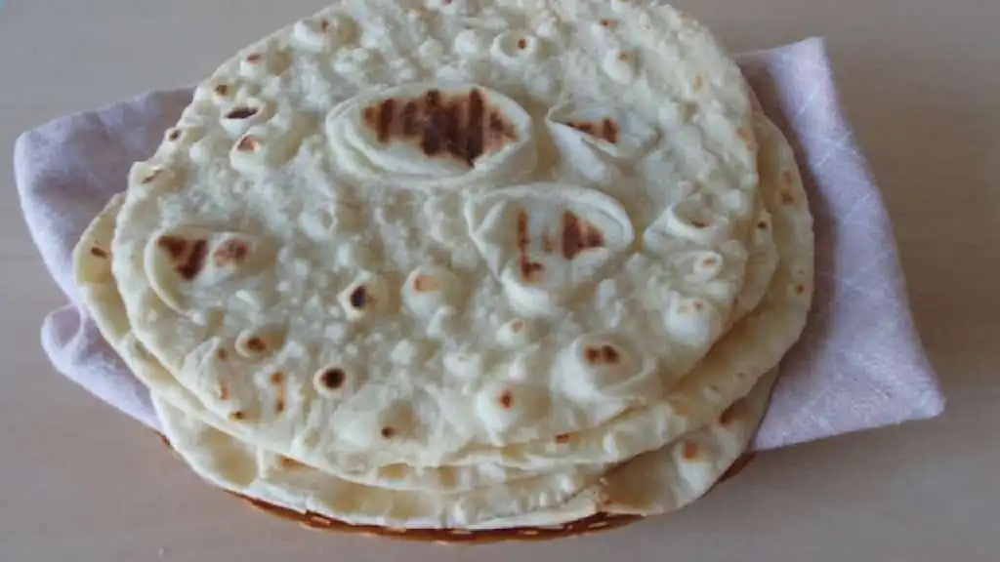

Naan Bread

A curry serves best with naan that is unleavened bread. Traditionally made in ‘Tandoor or clay oven' but at home, we will be making it in the oven and/or on the stovetop. Naan is not eaten solely but acts as assortments with meat, veggies, or egg items.
- ⏲️ Prep time: 90 min
- 🳠Cook time: 30 min
- 🍽️ Servings: 4
Ingredients
- All-purpose flour 3 cups
- Active dry yeast 1 tbsp
- Sugar 2 tbsp
- Warm Milk 1 cup
- Butter melted 2 tbsp
- Oil - little to grease
Directions
- Put the yeast and sugar to warm milk in a large mixing bowl and stir well. Leave it for 3-5 minutes.
- Put the flour and salt into a large mixing bowl and whisk to combine. Sprinkle additional flour as needed to keep the dough from sticking to the sides.
- Once the dough is soft and ready, apply oil on it and cover it with a soft cloth. Rest it for 2–3 hours.
- Knead the dough again, sprinkle all-purpose flour, and knead until smooth.
- Divide dough into 4 equal pieces. Form pieces into balls. Roll out dough balls to desired thickness (about the size of a small tortilla).
- Now transfer the naan to the foiled baking tray and bake in preheated at 180 C for 30-35 minutes.
- After baking, brush the top with butter and cut it into four pieces and serve. Enjoy!